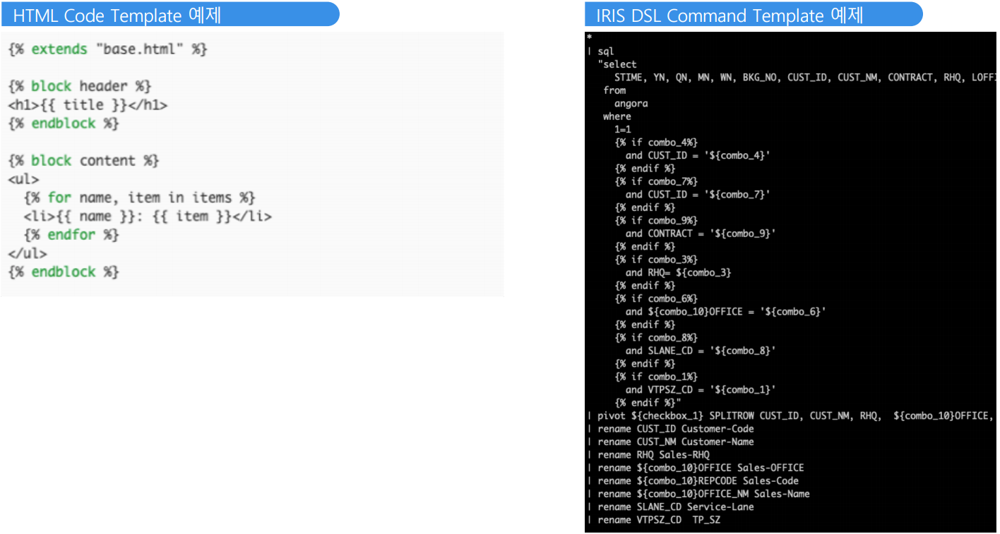
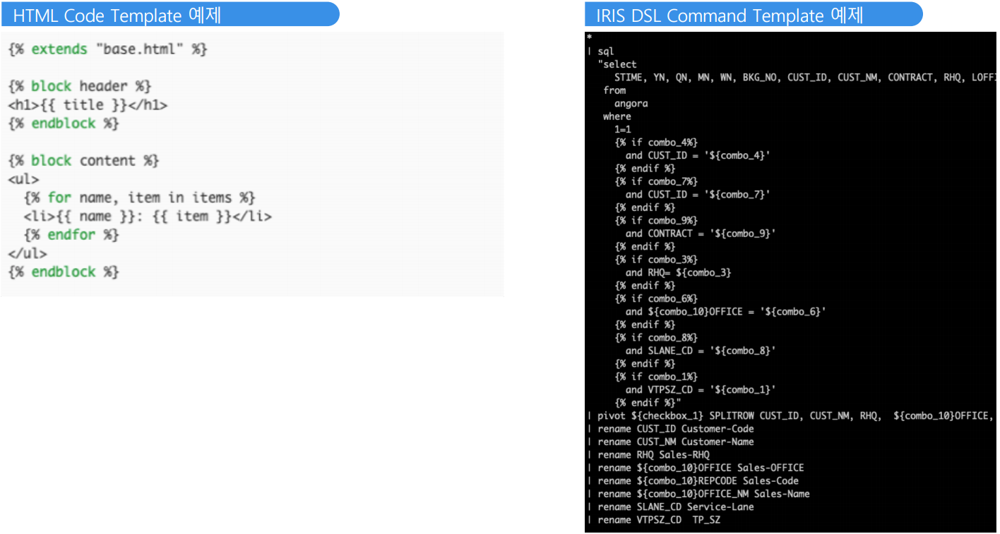

Templating Language¶
정보 조회를 위한 동적 Query 구성 지원.
IRIS Studio Component와 Binding된 변수 사용 가능.
Jinja2 템플릿 문법을 Client side redering을 지원하는 nunjucks 적용
정보 조회를 위한 동적 Query 구성 지원.
IRIS Studio Component와 Binding된 변수 사용 가능.
Jinja2 템플릿 문법을 Client side redering을 지원하는 nunjucks 적용
